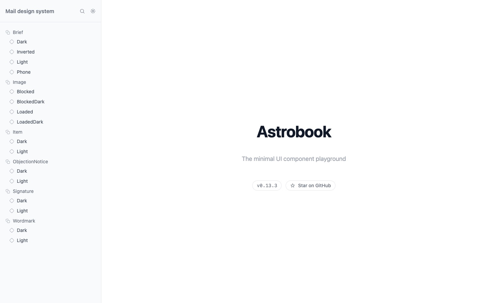
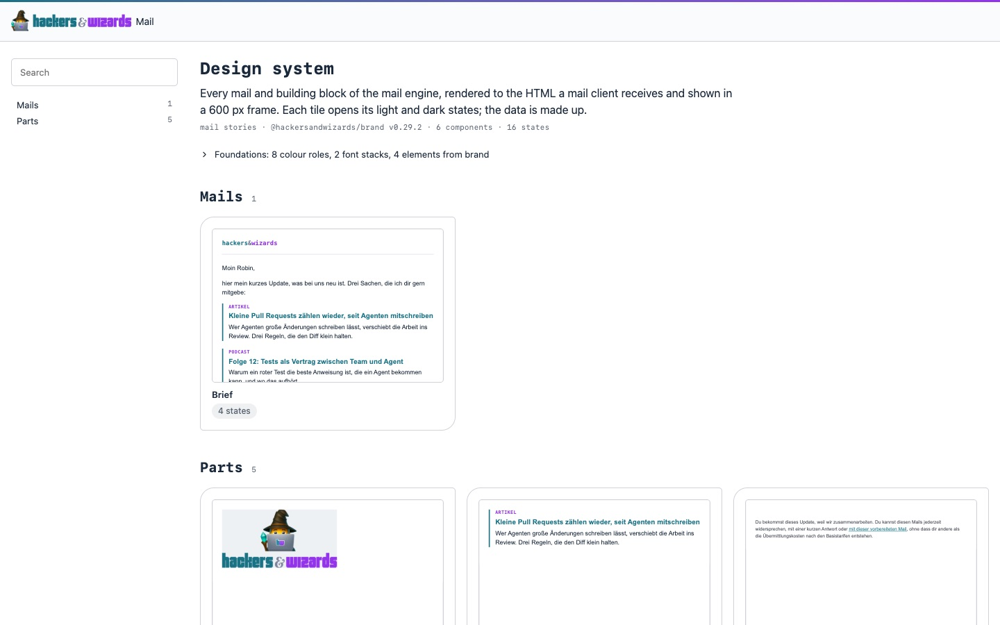
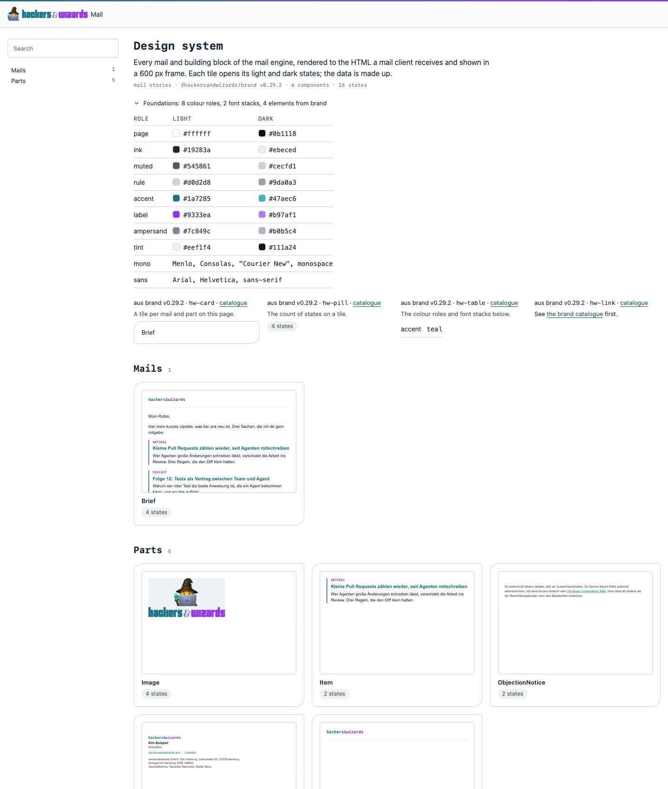

The Astrobook home at /design-system/ now uses brand's catalogue shape: header,
rail with the groups, a tile per mail and part drawing its light state at the 600 px column.
Brand is pinned at v0.29.2 (was v0.27.14). The rendered mails did not change: the specimen
renders byte-identical HTML and text, and 16 screenshots (2 mails, light, dark, inverted,
images blocked, 600 and 390 px) are byte-identical before and after.
Blind review, small: the owner and a developer as personas, Claude and Codex, two runs each. All 8 runs would ship the new home. Mean total 36.5 of 50 against 30.75 for the old home; the largest spread between two runs of one reviewer was 5.


